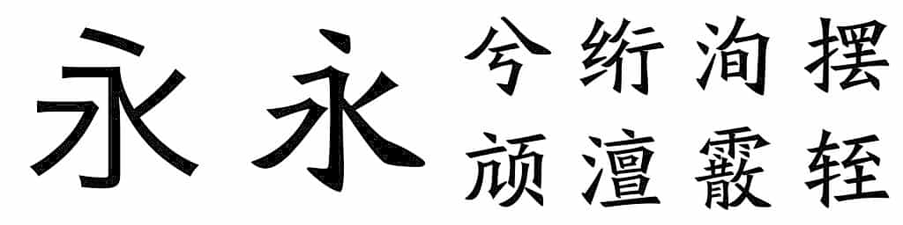
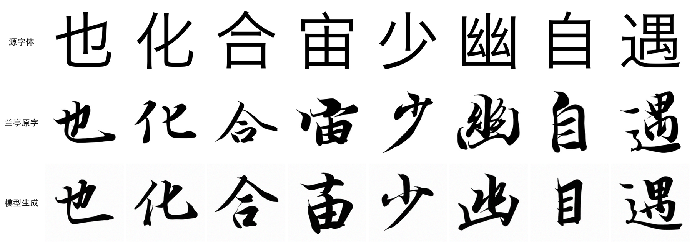
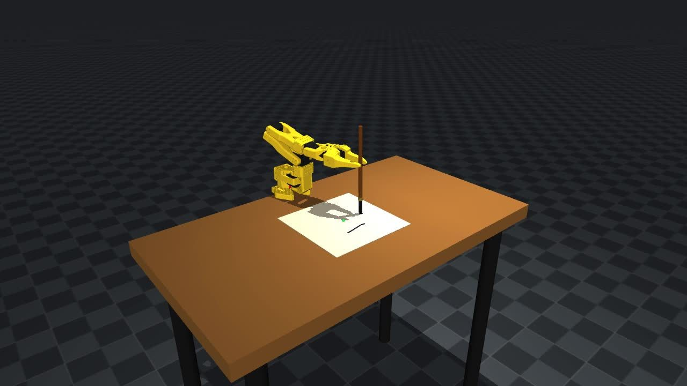
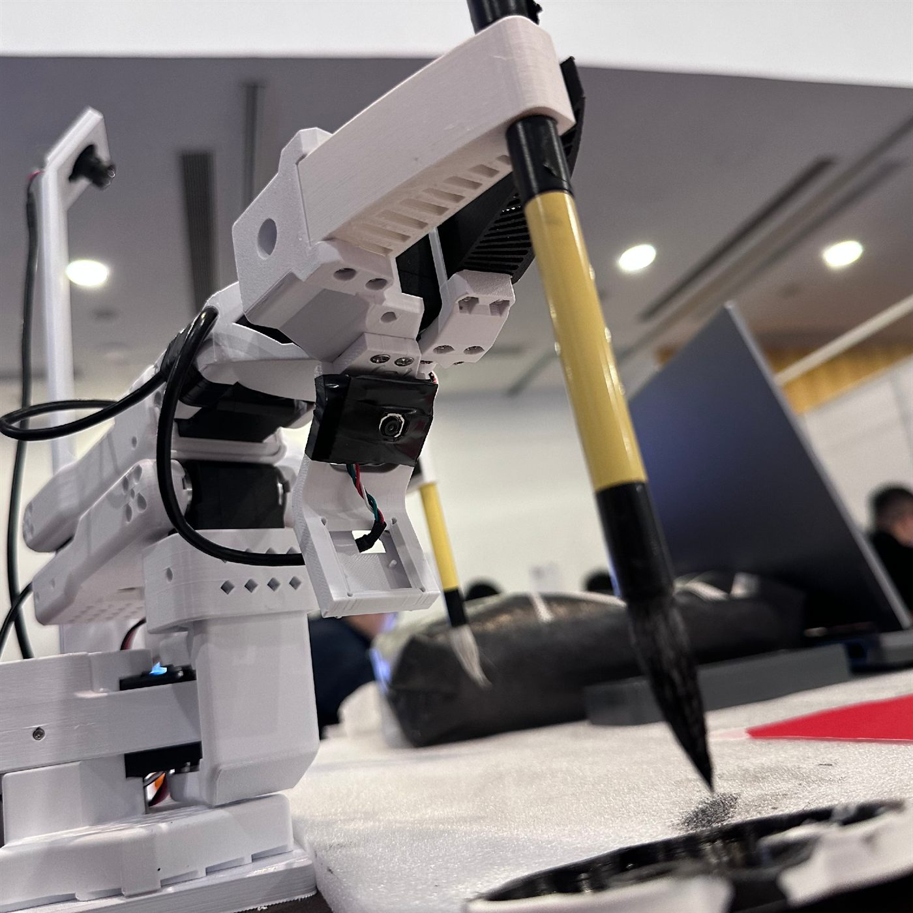
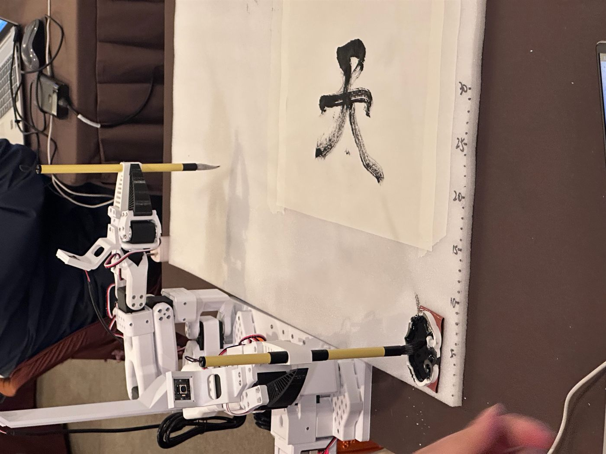
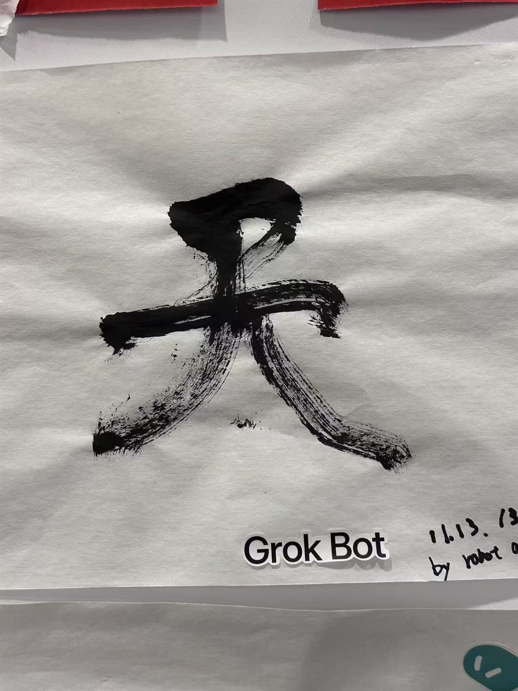
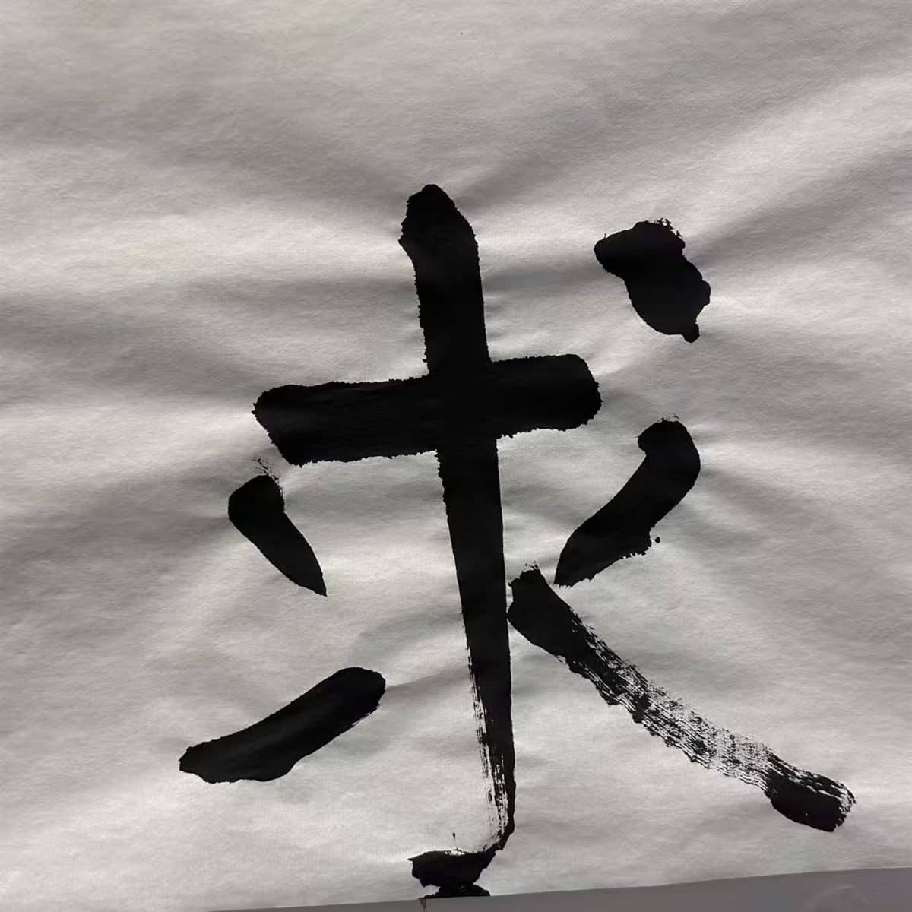
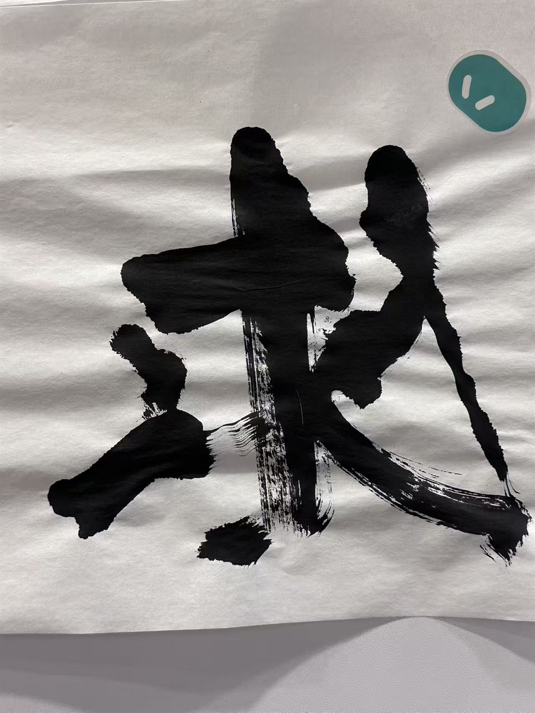
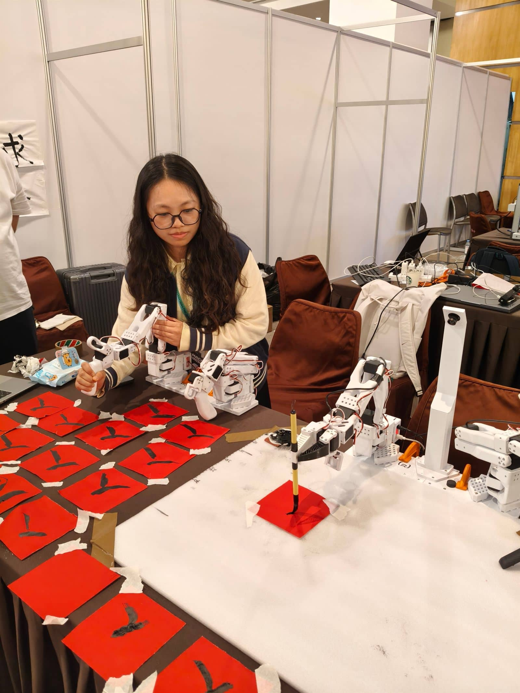
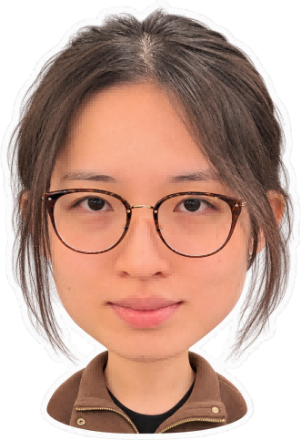

实拍
The Recording
终稿演示用的现场录像，大约 30 秒。后面的播放器是仿真回放，不是这段。
The on-site recording from the deck, about 30 seconds. The player further down is the simulation replay, not this clip.
手写的字
Handwritten Signs
如果你去过香港或澳门，走在弥敦道或是旺角街头，抬头望去，招牌上那些苍劲有力的汉字，就是北魏真书。这些手写招牌早已是香港的文化符号，它不只是信息载体，更是一门艺术。
If you have been to Hong Kong or Macau, walk down Nathan Road or through Mong Kok and look up: the forceful characters on the shop signs are Wei Bei zhenshu, a Northern Wei stele hand in regular script. Those hand-written signs have long been a cultural symbol of Hong Kong — not only a carrier of information but an art form in its own right.

真实墨迹离不开书法家，但人的精力、笔法有天然局限。
Real ink cannot be made without a calligrapher. But a person’s stamina and brushwork have natural limits.
写几个大字、一副挥春不难，但汉字总量超十万，常用字约三千五百个，中国书法也远不止北魏真书这一种风格。篆、隶、楷、行、草五大书体，衍生出成百上千种风格。
Writing a few large characters, or one spring couplet, is not hard. But there are more than a hundred thousand hanzi in all, about 3,500 in common use, and Chinese calligraphy is far more than Wei Bei zhenshu. The five scripts — seal, clerical, regular, running, cursive — branch into hundreds of styles.
这正是字体创作者的困境：手写墨迹高度依赖书法家。少量作品还好，一旦需要成套、大规模、多书体的墨迹样本，时间、预算、人力上限三道门槛就摆在眼前。大家要么退而求其次，选用没有笔墨质感的电脑矢量字，要么只能放弃想法。
This is the bind a type designer works in: real ink depends heavily on a calligrapher. A few pieces are fine. But once you need a set of ink samples — large-scale, multi-script — three ceilings arrive together: time, budget, and hands. Most people either settle for vector type with none of the texture of ink, or give up on the idea.
书法之美不该被人的能力边界困住。我们打造这套具身书写系统，让珍贵的手写墨迹得以留存，帮助书法创作者规模化传播，让中国书法重新回到我们的日常生活之中。
The beauty of calligraphy should not be fenced in by the limits of a person. We built this embodied writing system so that precious hand-written ink can be kept, so that calligraphers can spread their work at scale, and so that Chinese calligraphy can return to everyday life.
三条线
Three Lines
先有字，再落笔。字体是队友的线，我在台上快速带过。现场演示走的是规则控制。
A character first, then the brush. The font line belonged to a teammate; on stage I only walked through it. The live demo was the rule controller.
字体生成
Font Generation
底座不是我们训的。开源 zi2zi-JiT 的 JiT-B/16 已经认识「一个字正常长什么样」。我们只在上面挂 LoRA。
We did not train the base. The open zi2zi-JiT JiT-B/16 already knows what a character looks like. We only hung a LoRA on it.




规则写字
Rule-Based Writing
我负责算法。一张字图要变成关节角，中间四步。笔杆歪比笔尖偏两毫米更要命，所以腕滚转锁在 90 度，笔杆相对竖直的倾角压在 5 度以内，逆解只用肩、肩俯仰、肘、腕俯仰。
I owned the algorithm. Four steps turn a glyph into joint angles. A tilted brush shaft matters more than a 2 mm tip error, so wrist roll stays locked at 90° and shaft tilt stays within 5° of vertical. Inverse kinematics uses shoulder, shoulder pitch, elbow, and wrist pitch.


先仿真，再真机
Simulation, Then the Arm
MuJoCo 场景按 SO-101 的真实尺寸搭，桌子、纸、虚拟毛笔都在。轨迹先在仿真里跑。现场网只有几百 KB/s，数采脚本是当场让 Cursor 写的，没有把仓库拉下来。
The MuJoCo scene uses the SO-101’s real dimensions: table, paper, and a virtual brush. Trajectories ran there first. The venue network was a few hundred KB/s, so the logging scripts were written on the spot in Cursor instead of cloning a repository.

下面是浏览器里回放的仿真轨迹，写的是「澳」。可以拖动视角、暂停、改速度。这不是真机录像。
A browser replay of the exported simulation trajectory, writing 澳. Drag to orbit, pause, or change speed. This is not the real-arm recording.


真下发角是仿真角加这台从臂自己的零点偏移。换臂要重标定。官方校准会改零点，这条写字线没有用它。
Commanded angles are simulated angles plus that follower’s zero offset. Another arm needs a new calibration. The stock calibrate routine moves the zero, so this writing line does not use it.
提按：把粗细写成高度
Pressure, Written as Height
毛笔没有力传感器。沿中线量法向宽度，窄的地方抬，宽的地方压，想用高度去近似提按。这一版规划器还是整笔恒定下压，这条曲线没有接进去。
The brush has no force sensor. The idea is to measure width along the normal of the centerline, lift where it is thin, and press where it is thick, so height stands in for pressure. This version’s planner still uses one constant press for the whole stroke. That curve is not wired in.






模型这一条
The Model Line
规则写的是字形。人写的还有停顿和出手，那些不在字库里。所以另外采了主从同构的遥操作：30 Hz，正视和腕部两路相机。官方校准会改零点，数采没有用它。终稿这页写的是遥操 55 条，真机和仿真按 7 比 3 混合，准备训 ACT。
The rules write the geometry. A person also pauses and flicks, and that is not in a font file. The other line is isomorphic leader–follower teleoperation at 30 Hz, with front and wrist cameras. Stock calibration moves the zero, so logging did not use it. The deck’s page says 55 teleop episodes, mixed real to simulation at 7 to 3, for an ACT run.


两条线不互相替换。规则保证写得出，模型追求写得像。
The two lines do not replace each other. Rules make a character come out. The model is there to make it feel written.
| 规则控制 | 模型驱动（ACT） | |
|---|---|---|
| 任意新字 | 直接写 | 要先采集 |
| 笔顺 | 显式可控 | 从数据里学 |
| 轻重提按 | 高度近似，这一版还没接上 | 想学到手感 |
| 泛化 | 字库里有的字可以直接写 | 以采过的字为主 |
| Rule control | Learned policy (ACT) | |
|---|---|---|
| A new character | Write it directly | Needs a demonstration first |
| Stroke order | Explicit | Learned from data |
| Pressure | Height as a stand-in; not wired in this version | Meant to pick up the feel |
| Generalization | Any glyph in the library | Mostly characters that were collected |
遥操作采得到动作，采不到笔法。握着主臂平移，和写毛笔不是同一个动作。
Teleoperation captures the motion, not the brush technique. Translating a leader arm is not the same action as writing with a brush.
谁做的
Who Did What
照片按终稿团队页的位置对上名字。代码还在本机，没有公开仓库。
Photos are matched to names by where they sit on the deck’s team page. The code is still local. There is no public repository yet.

下一步
Next
三条都还没做。终稿自己写的下一步是：遥操作换成动作捕捉再重定向，以及把粗细曲线真正写进规划器。
None of the three is started. The deck’s own next step was to replace teleoperation with motion capture and retargeting, and to put the thickness curve into the planner.
写字算法
Writing control
继续优化我负责的控制算法。给每个笔画建一套规范运笔倾角，以及同类运笔数据。
Keep improving the control algorithm I own. For each stroke, build a library of the canonical brush inclination and the related stroke data.
数位毛笔
A digital brush
把数采做扎实，把模型训好，做成一支数位毛笔。
Collect better data, train a better model, and make a digital calligraphy brush.
涂鸦
Graffiti
涂鸦机器人。概念已经写在那一页，样机还没有。
Graffiti robot. The concept is on that page. There is no prototype yet.